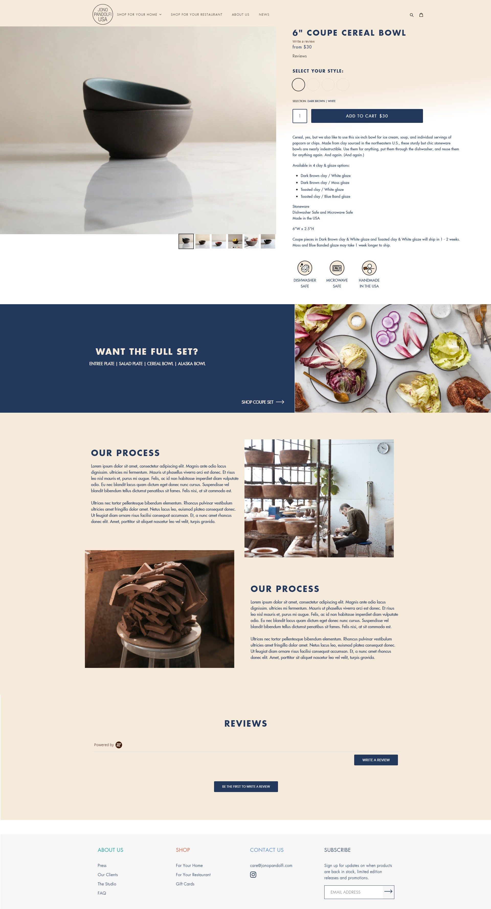

Jono Pandolfi
Shopify Store
Role: Lead Freelance Shopify/Front-End Developer
Codebase: Shopify Liquid, Sass, and responsive design
Duration: January 2021 - March 2021
Launched: 2021
As the Lead Freelance Shopify/Front-End Developer for the Jono Pandolfi Shopify Store, I built and customized functional Shopify components based on designs created by the agency's in-house designers.

Overview
The Jono Pandolfi team was looking to move from SquareSpace to Shopify, as well as to create both a store for wholesalers and the general public. The new store was to be professional and clean, showcasing their handmade products and stellar reviews.
Approach
The designers created a site that I then translated into custom code for Shopify. My goal was to make reusable sections of code so that the Jono team could easily manipulate or edit if necessary in the future, without the need for a developer.
I worked closely with the design team to make decisions on how elements would look on different screen sizes. We also made decisions on different animations and effects on click or hover.
I created a custom filter to filter products for the general public, as the chosen theme did not have a built in filter. I edited the product pages to be able to show different products and images based on which variant was selected.
The end site is very sleek, with custom reusable elements and quick loading times.
Results
The average order value immediately went up 30% after the new site was launched. This was due to the products being easier to find and the improved site navigation.
The two separate stores made the site much easier to customers to navigate as well.

Example Product Page (PDP) - Desktop